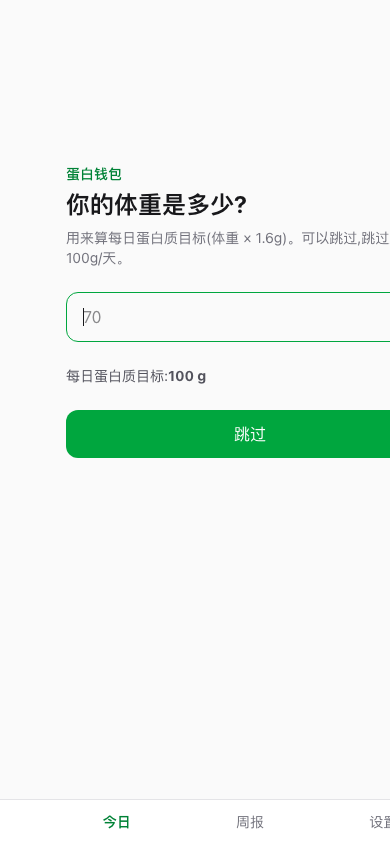

蛋白钱包 ProteinWallet
已上线拍一张小票，同时记账与记营养。自创核心指标"蛋白质单价（¢/g）"，把营养决策变成消费决策。
≤10 秒单次记录目标
17 / 17首轮评测区间命中
7 项主动砍掉的功能
痛点有增肌需求、对生活费敏感的留学生，食堂和外卖场景无法称重；营养 App 不管钱，记账 App 不管营养。
方案拍小票、拍餐食、一句话文字、自炊双记录 4 种输入；3 个页面跑通"记录→估算→差额→周报"。AI 只做识别，算术交给代码；输出统一为"区间 + 置信度 + 依据"。
评测以 5 家连锁餐厅官方营养表为真值建评测集，定义区间命中率、区间相对宽度、小票解析准确率、用户修正率 4 项指标；首轮命中率 100%，高置信区间宽度 20%。
结果与取舍MVP 已上线。砍掉饮食推荐、热量警告等功能以控制幻觉与伦理风险；以"周人均记录餐次"为北极星指标，应用内已埋点记录修正率与单次耗时。

点击后在手机框内加载真实应用